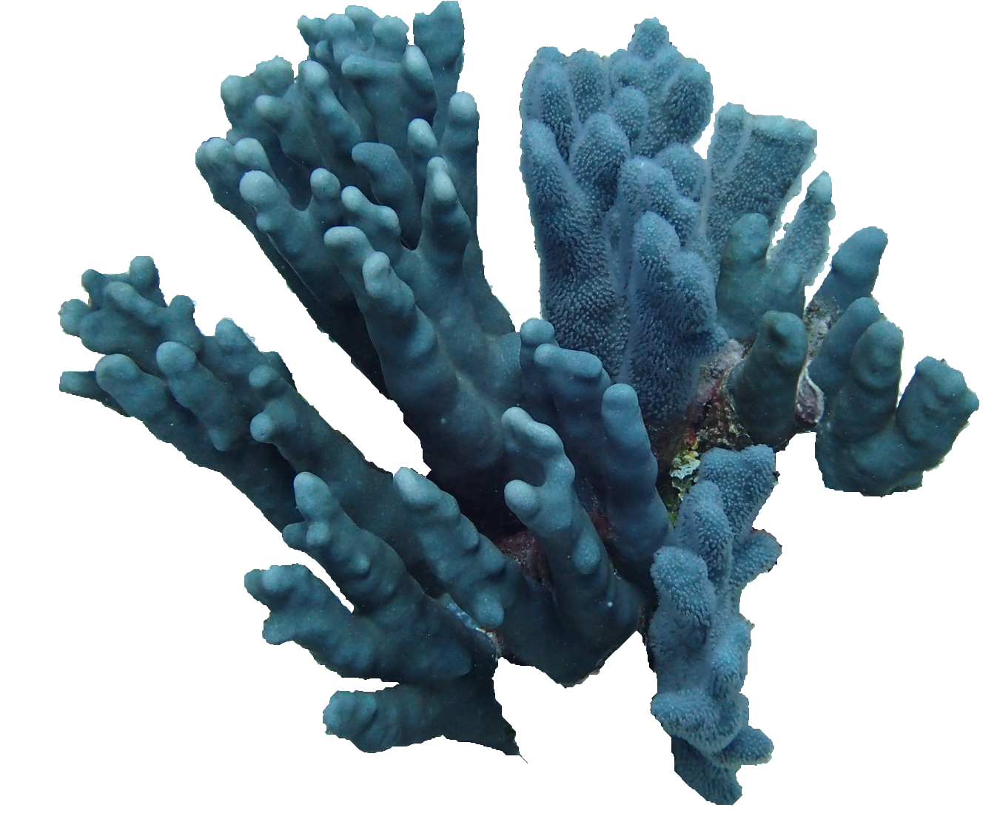

×
Heliopora coerulea (Pallas, 1766)
Indo-Pacific blue coral
Helioporacea
Helioporidae
Vulnerable
Forms large colonies, more than 100 cm in diameter, that may be massive, or most commonly, composed of vertical branches or folia. The surface appearance is very smooth, and the color in life is a distinctive grey-brown with white tips. The entire skeleton is blue.
Most common in shallow water, on reefs at typically less than 2 m. Found in exposed reef areas, reef flats and the intertidal zone.
Not Available
Indo-West Pacific: West to Red Sea; north to southern Japan; east to Samoa; and south to New Caledonia.